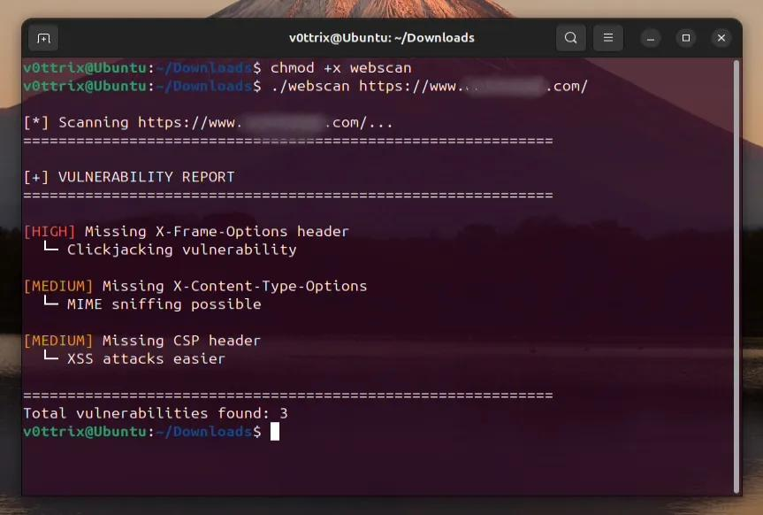

A cross-platform terminal tool for scanning websites and generating vulnerability reports. This tool helps identify security weaknesses in web applications through comprehensive automated testing.
Latest Release (v2.0): Download webscan
After downloading:
chmod +x webscan ./webscan <website-url>
./webscan example.com ./webscan https://mywebsite.com
git clone https://github.com/v0ttrix/Virus-Detection-Tool.git cd Virus-Detection-Tool pip install -r requirements.txt python scanner.py <website-url>
Works on Linux, Windows, and macOS